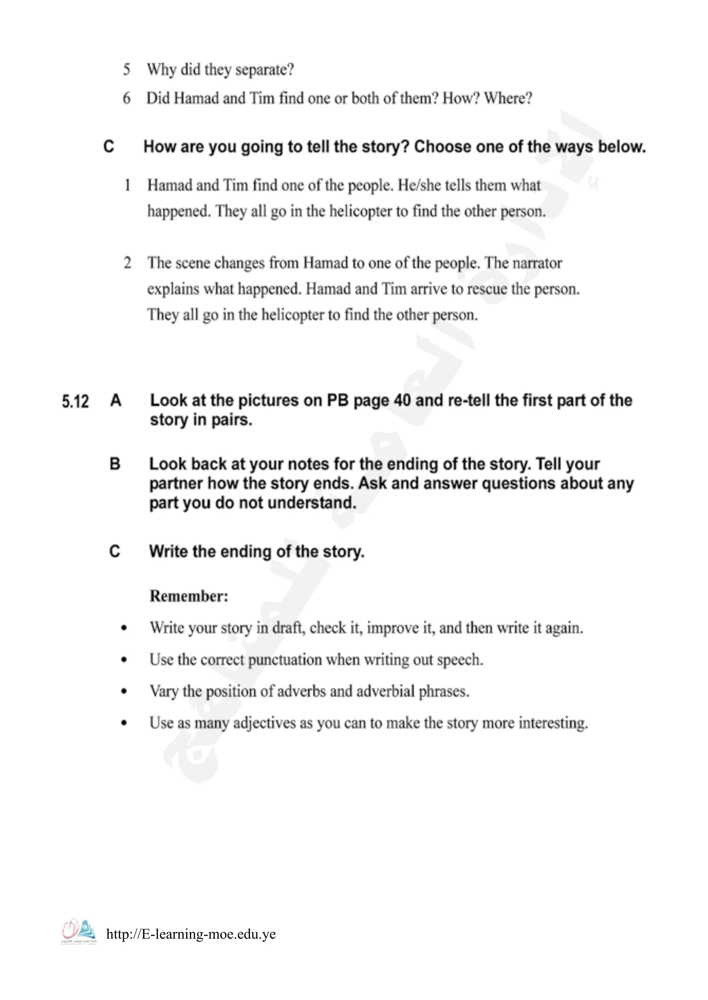

5.12 A Look at the pictures on PB page 40 and re-tell the first part of the story in pairs. B Look back at your notes for the ending of the story. Tell your partner how the story ends. Ask and answer questions about any part you do not understand. C Write the ending of the story. Remember: • Write your story in draft, check it, improve it, and then write it again. • Use the correct punctuation when writing out speech. • Vary the position of adverbs and adverbial phrases. • Use as many adjectives as you can to make the story more interesting.
[
{
"num": 1,
"question": "5.12 A — Corrected oral opening based on PB p. 40 & WB 5.11 A",
"model_answer": "One afternoon, Hamad Faisal and Tim Brook were flying across the desert in their company helicopter when Hamad spotted an empty red car below. Tim landed nearby. They checked the car and found plenty of petrol and plenty of water in the back, yet two sets of footprints walked off into the open sand, 25 kilometres from the nearest road. Quickly, they climbed back into the helicopter and flew along the tracks until they separated.",
"explain_ar": "إعادة سرد صحيح يخلو من الأغلاط الاثنتي عشرة السابقة."
},
{
"num": 2,
"question": "5.12 B — Logical check question: 'Why didn't the two men take the water bottles from the car?'",
"model_answer": "They must have left in sudden panic (for example, thinking they were closer to a camp, seeing someone collapse, or only grabbing small flasks in confusion) — your ending should give a believable reason matching why plenty of petrol and water remained!",
"explain_ar": "نهاية مقنعة لا بد أن تفسر سرّ ترك السيارة سليمة والوقود والماء ممتلئين."
}
][
{
"label_ar": "1) تفرّق المسارين والعثور على أول شخص (تنويع مواضع الظروف)",
"placeholder": "Quickly, Tim turned left to follow the clearer footprints. After ten minutes over the golden dunes, Hamad pointed down eagerly. Beside a rocky hill, a young exhausted man was waving his red cap."
},
{
"label_ar": "2) الحوار بعلامات الترقيم الدقيقة لتفسير ما حدث عند السيارة",
"placeholder": "'What happened to your car?' shouted Tim loudly as they helped the frightened man aboard. 'Our radiator leaked and a thick sandstorm hid our tracks!' the young geologist cried. 'We panicked and separated to search for the main road—and forgot our spare cans in the boot!'"
},
{
"label_ar": "3) إنقاذ الشخص الثاني والخاتمة المشوّقة",
"placeholder": "Immediately, Tim flew along the second faint trail. Fifteen minutes later, they spotted his older companion resting in the narrow shade of a dry bush, gave both thirsty men cool water, and carried them safely back to Rig 10."
}
]{
"wb_ocr_vs_image": "طُوبقت صفحة WB ص 70 مع wb-071.png: صُحّح تشوّه OCR في عنوان '512 A' والنقاط النجمية ('e Use...') واستُعيد نص Remember كاملاً."
}